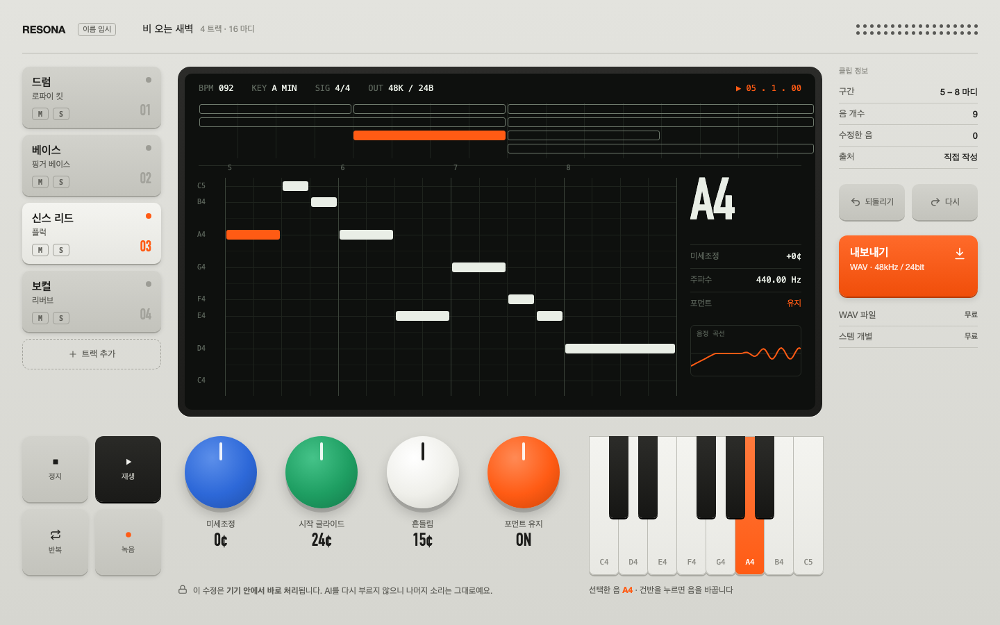
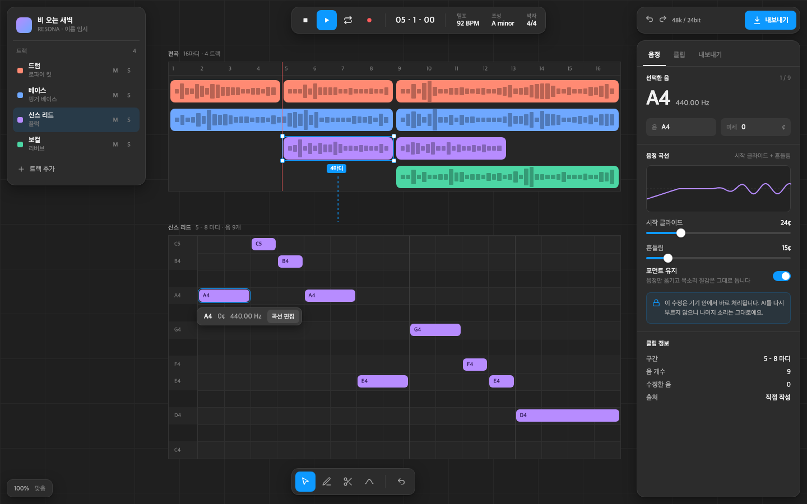
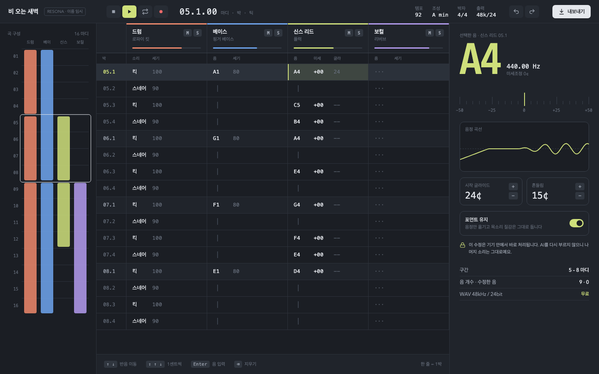
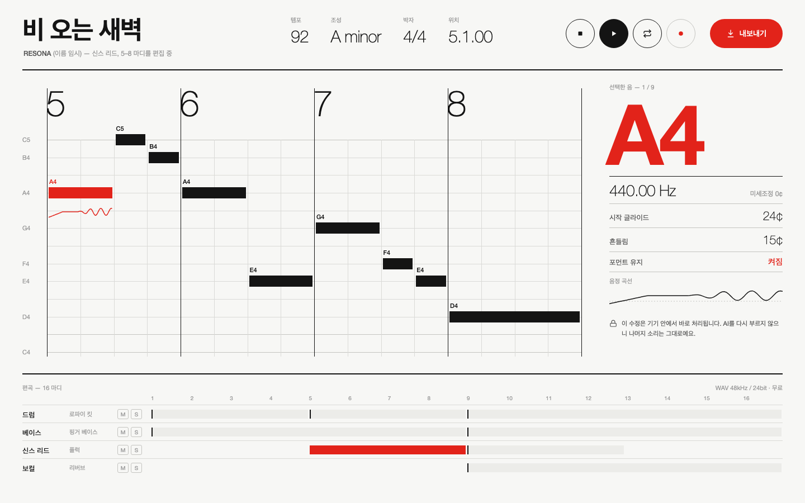

시안 v3 — 네 방향 비교
그림을 누르면 그 시안만 크게 봅니다. 아래 "실제 화면 열기"는 HTML 원본입니다.
4개 한눈에
1 하드웨어
2 캔버스
3 트래커
4 스위스

1 · 하드웨어
라이트
기기 패널 + LCD + 색 노브 4개 + 건반. 참고:
Teenage Engineering OP-1
,
EP-133
·
실제 화면 열기

2 · 캔버스
다크
무한 캔버스 + 떠 있는 패널, 클립 → 편집 프레임 연결. 참고:
Figma UI3
·
실제 화면 열기

3 · 트래커
다크
시간이 아래로 흐르는 세로 편집기, 음 단위 숫자 입력. 참고:
Polyend Tracker
,
Renoise
·
실제 화면 열기

4 · 스위스 타이포
라이트
음 편집기가 주인공, 큰 마디 숫자와 빨간 A4. 참고: 스위스 국제 타이포그래피 양식 ·
실제 화면 열기